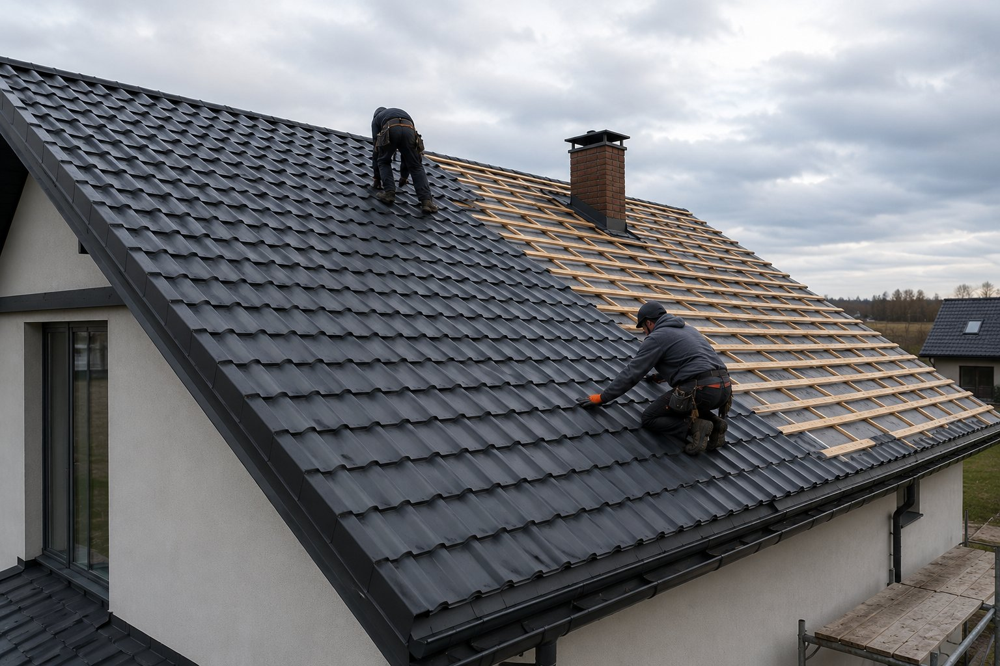

Для каких объектов
Частные дома с простой и средней геометрией скатов.
Монтаж металлочерепицы для частных домов и коттеджей. Проверяем основание, геометрию скатов, мембрану, обрешётку, карниз, конёк и водосточную систему.

Монтаж металлочерепицы для частных домов и коттеджей. Проверяем основание, геометрию скатов, мембрану, обрешётку, карниз, конёк и водосточную систему.
Осмотр кровли и основания
Техническое решение под объект
Подготовка основания и монтаж
Проверка узлов и результата
Металлочерепица хорошо смотрится на скатных крышах частных домов, коттеджей и малоэтажных объектов. Чтобы кровля выглядела аккуратно и работала правильно, важно выдержать шаг обрешётки, геометрию скатов и порядок укладки листов.
На осмотре проверяем стропильную систему, мембрану, вентиляционный зазор, карнизные свесы, ендовы, конёк и места примыкания к трубам. После этого определяем, какие узлы нужно подготовить до укладки покрытия.
В процессе монтажа следим за линией карниза, правильным нахлёстом, креплением в нужных точках, установкой планок и водосточной системы. От этих деталей зависит внешний вид крыши и стабильная работа покрытия в сезон дождя, снега и сильного ветра.
Работаем с объектами в Харькове и области. После осмотра определяем техническое решение, состав работ и последовательность монтажа.
Выезжаем на объекты в Харькове и Харьковской области: Салтовка, Алексеевка, Павлово Поле, Новые Дома, ХТЗ, Журавлёвка, Песочин, Солоницевка, Дергачи, Малая Даниловка, Люботин и другие направления.
В портфолио показаны отдельные объекты без объединения разных домов в одну карточку. Для каждой работы указаны тип объекта, кровельная система и выполненные узлы.
Да, металлочерепица хорошо подходит для частных домов, коттеджей и хозяйственных построек при правильном уклоне скатов, обрешётке, вентиляции и доборных элементах.
Проверяем геометрию скатов, состояние основания, шаг обрешётки, карнизную линию, конёк, ендовы, примыкания и возможность нормальной вентиляции подкровельного пространства.
Это зависит от состояния дерева, шага обрешётки и ровности плоскости. Старую основу можно использовать только после проверки, если она выдерживает нагрузку и соответствует выбранному профилю.
Металлочерепица чаще используется на жилых домах из-за внешнего вида, а профнастил практичнее для хозяйственных, коммерческих и простых скатных крыш. Выбор зависит от объекта, уклона и задач.
Особое внимание уделяем карнизу, коньку, ендовам, торцевым планкам, примыканиям к трубам и стенам, а также водосточной системе.
Решение подбираем под геометрию, конструкцию и условия эксплуатации конкретного объекта, а не только под название материала.
Частные дома с простой и средней геометрией скатов.
Мембрана, контробрешётка, обрешётка, карниз, торцевые планки, конёк, примыкания и водосток.
Геометрию, основание, вентиляцию, примыкания, проходки и отвод воды.
Перед монтажом уточняем состав системы и критические узлы. Это уменьшает импровизацию на строительной площадке и помогает контролировать результат по этапам.
Для услуги «Монтаж металлочерепицы в Харькове» мы сначала анализируем геометрию, основание и ключевые узлы. Материал подбирается не отдельно от конструкции, а как часть всей кровельной системы.
Опыт: METROPLEX работает в проектировании, малоэтажном строительстве и кровельных решениях с 2017 года.
Напишите тип здания, материал кровли и задачу. После осмотра объекта определим техническое решение и состав работ.
Работаем в сфере малоэтажного строительства, проектирования и кровельных решений. Опыт показываем через реальные объекты, фотографии этапов, узлы и технические пояснения.
Посмотреть реальные работы